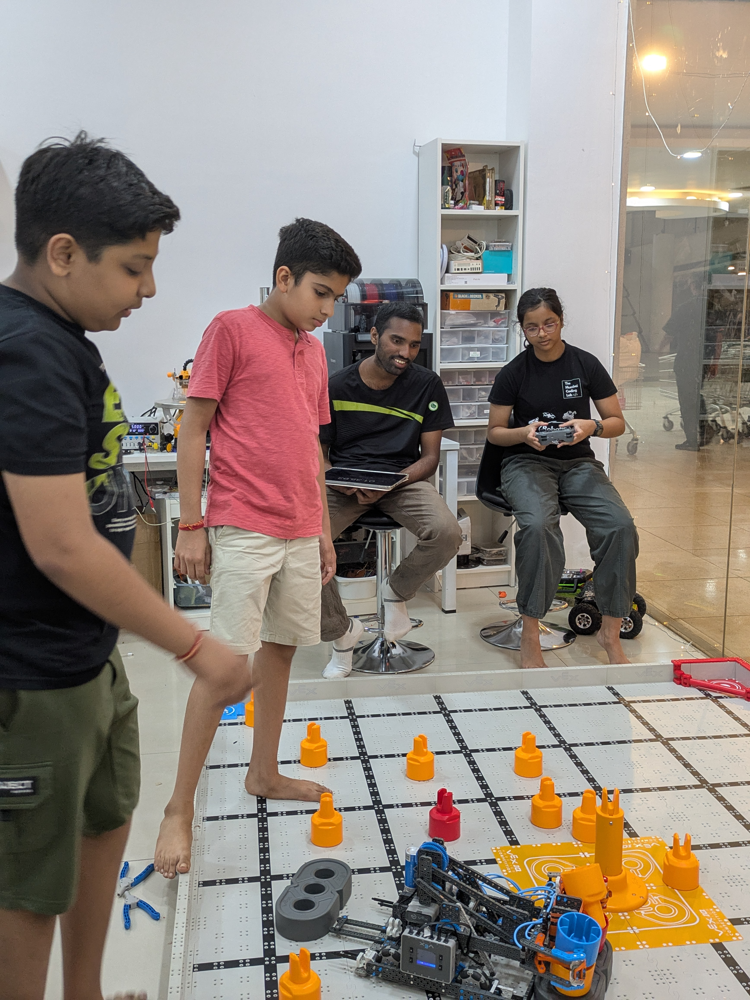

Project 01
VEX IQ Robotics
VEX IQ · VEXcode Blocks · Motors · Sensors
I worked on VEX IQ in 2024 and 2025. My saved VEXcode project uses controller input and a bumper sensor to control a flywheel, alongside a two-motor drivetrain and intake. Team testing helped me connect the code to what the robot actually does on the field.
View photo journal